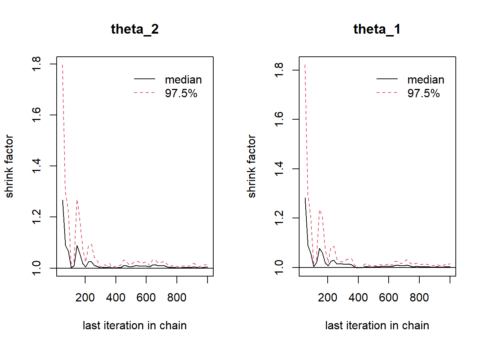
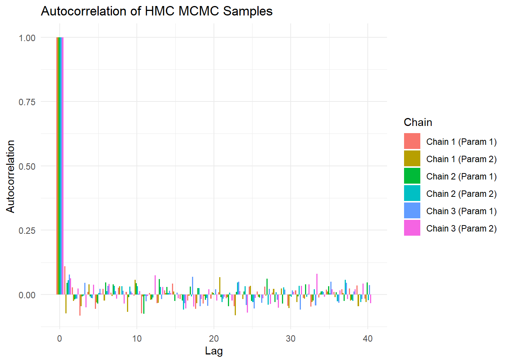

Code
n <- 100
theta <- 0.8
size <- 1
set.seed(1234)
data <- rbinom(size, n, theta)
paste("Number of success: ",data," out of ",n, "individuals")[1] "Number of success: 85 out of 100 individuals"L03: Explain how these generative models can be used for inference, prediction and model criticism.
L04: Demonstrate proficiency in using statistical software packages (R) to specify and fit models, assess model fit, detect and remediate non-convergence, and compare models.
By the end of this week you should be able to:
– Create generative models
– Understand traceable and untraceable solutions
– Explain the convergence of MCMC.
– Conduct prior predictive check.
– Conduct posterior predictive check.
A generative model is designed to generate new data points by capturing the intricate probability distributions of existing datasets. By learning these distributions, the model can produce data that reflects the characteristics of original datasets, simulating realistic examples. A generative model can also be used to understand how a set of observed data could have arisen from a set of underlying causes, which we will discuss more later in this course.
In Bayesian modelling, generative models are particularly useful as they provide a framework for estimating the likelihood of data under different hypotheses. This capability enhances Bayesian inference processes, allowing for more effective prior and posterior distribution updates. The flexibility of generative models in simulating various scenarios can also improve the robustness and accuracy of Bayesian models, and refines the decision-making and predictive capabilities.
Note that, in this course, we use “generative model” broadly to consider the origins of a particular dataset. However, this term also has a more specific definition, especially as it contrasts with “discriminative models”, for details see Bernardo et al. (2007).
Example
Let’s explain this using the example we discussed earlier related to the vaccine efficacy rate. Let use assume that we know the true vaccine effectiveness rate, which is \(0.8\), and given this information we can recreate the data.
In a generative modelling context, we simulate data say for 100 individuals by considering success probability \(\theta = 0.8\).
n <- 100
theta <- 0.8
size <- 1
set.seed(1234)
data <- rbinom(size, n, theta)
paste("Number of success: ",data," out of ",n, "individuals")[1] "Number of success: 85 out of 100 individuals"We can see that our simulation using one replication yields probability 0.85, whereas, actual data shows \(\theta = 0.8\). Hence, to reflect actual data we need to replicate the data simulation for multiple times, which yields an average value for \(\theta \approx 0.8\) and upper and lower 95% credible interval (0.72,0.88). This is very simple example of how we can generate data when the model parameter is known. We will utilise this concept later in this course to simulate data and use Bayesian models to provide results based on disitions.
library(ggplot2)
n <- 100
theta <- 0.8
size <- 1000
set.seed(123)
data <- rbinom(size, n, theta)
ci <- quantile(data, probs = c(0.025, 0.975))
df <- data.frame(Successes = data)
p = ggplot(df, aes(x = Successes)) +
geom_histogram(
breaks = seq(-0.5, n + 0.5, by = 1),
fill = "skyblue",
color = "black",
boundary = -0.5
) +
scale_x_continuous(
breaks = NULL,
name = NULL
) +
labs(
title = paste("Histogram of Simulated Binomial Data (n =", n, ", θ =", theta, ")"),
y = "Frequency"
) +
geom_vline(xintercept = ci[1], linetype = "dashed", color = "red", size = 1) +
geom_vline(xintercept = ci[2], linetype = "dashed", color = "red", size = 1) +
annotate("text", x = ci[1], y = max(table(data)) * 0.9, label = paste0("2.5%: ", ci[1]), color = "red", angle = 90, vjust = -0.5) +
annotate("text", x = ci[2], y = max(table(data)) * 0.9, label = paste0("97.5%: ", ci[2]), color = "red", angle = 90, vjust = -0.5) +
theme_minimal() +
theme(
axis.text.x = element_blank(),
axis.ticks.x = element_blank()
)
library(plotly)
ggplotly(p)We can indentify an untraceable solution in Bayesian inference, where the posterior distribution cannot be expressed in a closed-form expression. This phenomenon occurs when the likelihood function and the prior distribution are incompatible, which results in complex integrals within Bayes’ theorem that are analytically intractable.
The opposite of untraceable solution is known as the traceable solution, which we have discussed in our previous lectures in the light of exact Bayesian inference. We already know that exact Bayesian inference means computing the posterior analytically, without approximations. And a tractable solution is one that can be computed exactly and efficiently, without requiring numerical approximations or complex sampling methods like Markov Chain Monte Carlo (MCMC). Thus traceable solution can be obtained when the prior distribution and the likelihood function are chosen such that the posterior distribution remains within a recognised family of probability distributions. For example, when a conjugate prior is used, the posterior has a known or a same functional form as the prior, i.e., for a Bernoulli model, that we have already discussed earlier in Lecture 2: \(\text{Prior: } \theta \sim \text{Beta}(a,b)\) and \(\text{Posterior: } \theta|y \sim \text{Beta}(a+y,b+n-y)\).
Use of non-conjugate priors and often complex likelihood functions, such as those involving hierarchical models, mixture models, or high-dimensional data yields a posterior form of distribution with untraceable solutions, even if we consider conjugate priors for the model parameters.
For a non-Gaussian likelihood (i.e., it does not follow a normal distribution), choosing a uniform prior leads to a situation where the resulting posterior distribution cannot be easily determined or expressed in a simple mathematical form and also yields untraceable solution.
Different types of sampling algorithms have been developed to tackle untraceable solutions, such as rejection sampling, variational inference, Laplace approximation, sequential Monte Carlo, Markov chain Monte Carlo (MCMC) etc. In this couse, we will learn how to use and implement the MCMC algorithms to solve real-life problems. We refer Gelman et al. (2013) for details on this for those interested to explore more.
In this course, we will focus on learning Markov chain Monte Carlo (MCMC) algorithm, which is a sampling based approach to obtain the posterior distribution.
A Markov chain is a stochastic process where the next state depends only on the current state, not on the sequence of states that preceded it. This property is called the Markovian or Markov property. The transition between states is defined by a transition probability matrix or kernel. On the other hand, Monte Carlo methods involve random sampling to estimate numerical quantities, such as integrals or expectations, to approximate the final solution. MCMC combines the Monte Carlo with Markov chains to generate samples.
Basic concept and generic structure for MCMC can be explained as follows. Say we are interested in parameter \(\theta\), then we state:
Hence, the MCMC states, there exist a transition distribution that guarantee that
\[ p(\theta\in \{\theta^{(t)},\theta^{(t+1)},...,\theta^{(q)} \}) \rightarrow p(\theta|\text{data}); \text{ as } q\rightarrow \infty \]
The function that determines the probability for selecting the next location, is called the transition distribution.
#set.seed(42)
#n_iter <- 10
#theta <- numeric(n_iter)
#theta[1] <- 0
#sigma <- 1
#for (t in 2:n_iter) {
# theta[t] <- rnorm(1, mean = theta[t - 1], sd = sigma)
#}
#x_vals <- theta[1:(n_iter - 1)]
#y_vals <- theta[2:n_iter]
#plot(x_vals, y_vals, type = "b", pch = 19, col = "blue",
# xlab = expression(theta[t-1]),
# ylab = expression(theta[t]),
# main = expression(paste("Transition plot: ", theta[t-1], " vs ", theta[t])))
#for (i in 1:(n_iter - 2)) {
# arrows(x_vals[i], y_vals[i], x_vals[i + 1], y_vals[i + 1],
# length = 0.1, col = "darkgreen", lwd = 2)
#}
#text(x_vals, y_vals, labels = paste0("t=", 2:n_iter), pos = 3, cex = 0.8)
#library(ggplot2)
#library(ggrepel)
#set.seed(007)
#n_iter <- 10
#theta <- numeric(n_iter)
#theta[1] <- 0
#sigma <- 1
#for (t in 2:n_iter) {
# theta[t] <- rnorm(1, mean = theta[t - 1], sd = sigma)
#}
#df <- data.frame(
# x = theta[1:(n_iter - 1)],
# y = theta[2:n_iter],
# theta_label = round(theta[2:n_iter], 2)
#)
#df$arrows_xend <- c(df$x[-1], NA)
#df$arrows_yend <- c(df$y[-1], NA)
#df_arrows <- df[1:(nrow(df) - 1), ]
#p1 <- ggplot(df, aes(x = x, y = y)) +
# geom_path(color = "steelblue", linewidth = 1, alpha = 0.6) +
# geom_segment(data = df_arrows,
# aes(xend = arrows_xend, yend = arrows_yend),
# arrow = arrow(length = unit(0.3, "cm"), type = "closed"),
# color = "firebrick", linewidth = 1.5, linetype = "dashed") +
# geom_point(color = "blue", size = 3) +
# geom_text_repel(aes(label = theta_label), size = 3) +
# labs(
# x = expression(theta[t-1]),
# y = expression(theta[t]),
# title = expression(paste("Transition plot: ", theta[t-1], " vs ", theta[t]))
# ) +
# theme_minimal()
library(ggplot2)
library(ggrepel)
library(plotly)
set.seed(007)
n_iter <- 10
theta <- numeric(n_iter)
theta[1] <- 0
sigma <- 1
for (t in 2:n_iter) {
theta[t] <- rnorm(1, mean = theta[t - 1], sd = sigma)
}
df <- data.frame(
x = theta[1:(n_iter - 1)],
y = theta[2:n_iter],
z = 2:n_iter,
theta_label = round(theta[2:n_iter], 2)
)
p2 <- plot_ly(df, x = ~x, y = ~y, z = ~z, type = 'scatter3d', mode = 'lines+markers+text',
line = list(color = 'firebrick', width = 5, dash = 'dash'),
marker = list(size = 5, color = 'blue'),
text = ~theta_label,
textposition = 'top right') %>%
layout(
scene = list(
xaxis = list(title = "theta[t-1]"),
yaxis = list(title = "theta[t]"),
zaxis = list(title = "t")
),
title = "Transition Plot of θ (in 3D)"
)
p2Now, we will discuss some popular and common MCMC methods we use in practice to solve real-life applications.
Some common MCMC algorithms include Metropolis-Hastings (MH) algorithm, Gibbs sampling, Hamiltonian Monte Carlo (HMC) etc. MH is a general MCMC method that generates candidate samples from a proposal distribution. A candidate is accepted or rejected based on an acceptance probability, ensuring the chain converges to the target distribution. Whereas, Gibbs sampling is a special case of the Metropolis-Hastings algorithm. Updates one variable at a time by sampling from its conditional distribution while keeping other variables fixed. The Hamiltonian Monte Carlo (HMC) algorithm uses gradient information from the target distribution to propose new samples, making it more efficient for high-dimensional problems.
The MH algorithm generates a sequence of samples that gradually approximates a target distribution say \(p(\theta)\). It starts with an arbitrary value say \(\theta^{(0)}\), and then uses a proposal distribution \(q(\theta^* | \theta_t)\) to propose a new value \(\theta^*\). In the next step it accepts or rejects \(\theta^*\) using an acceptance probability:
\[ A = \min \left(1, \frac{p(\theta^*) q(\theta_t | \theta^*)}{p(\theta_t) q(\theta^* | \theta_t)} \right) \]
Now, we generate a random number \(u\) (say) from uniform distribution with (0,1), and when \(u < A\), we accept the new point. That is, if accepted, then we set \(\theta_{t+1} = \theta^*\), otherwise keep the current sample, i.e., \(\theta_{t+1} = \theta_t\). We then iterate this process to generate a sequence of samples, and over time, the samples approximate \(p(\theta)\).
Metropolis Algorithm
A simpler version and special case of the MH algorithm is the Metropolis algorithm, where the proposal distribution is symmetric, i.e., \(q(\theta^* | \theta_t) = q(\theta_t | \theta^*)\). Hence, in this case, we write the acceptance probability as:
\[ A = \min \left(1, \frac{p(\theta^*) }{p(\theta_t) } \right) \]
Here, we can see as the proposal distribution is symmetric and it cancles out.
Example
Suppose, we want to sample from a standard normal distribution \(N(0,1)\) using the Metropolis-Hastings algorithm, starting from an arbitrary initial point. This allows us to observe how the MCMC chain gradually converges to the target distribution. We write the target density \(\theta \sim N(0,1)\) as:
\[ p(\theta) = \frac{1}{\sqrt{2\pi}}\exp\left(-\frac{\theta^2}{2}\right) \]
library(coda)
metropolis_hastings <- function(target_density, proposal_sd, n_iter, initial_value) {
chain <- numeric(n_iter)
chain[1] <- initial_value
for (i in 2:n_iter) {
proposal <- rnorm(1, mean = chain[i - 1], sd = proposal_sd)
acceptance_prob <- min(1, target_density(proposal) / target_density(chain[i - 1]))
if (runif(1) < acceptance_prob) {
chain[i] <- proposal
} else {
chain[i] <- chain[i - 1]
}
}
return(chain)
}
target_density <- function(x) dnorm(x, mean = 0, sd = 1)
set.seed(123)
n_iter <- 10000
n_chains <- 3
chains <- list(
chain1 = metropolis_hastings(target_density, proposal_sd = 1, n_iter, initial_value = 10),
chain2 = metropolis_hastings(target_density, proposal_sd = 1, n_iter, initial_value = -10),
chain3 = metropolis_hastings(target_density, proposal_sd = 1, n_iter, initial_value = 5)
)
mcmc_chains <- mcmc.list(
mcmc(chains$chain1),
mcmc(chains$chain2),
mcmc(chains$chain3)
)
summary(mcmc_chains)
Iterations = 1:10000
Thinning interval = 1
Number of chains = 3
Sample size per chain = 10000
1. Empirical mean and standard deviation for each variable,
plus standard error of the mean:
Mean SD Naive SE Time-series SE
-0.025039 1.066546 0.006158 0.020382
2. Quantiles for each variable:
2.5% 25% 50% 75% 97.5%
-2.05216 -0.70284 -0.01213 0.65225 1.94265 #par(mfrow = c(1, 3))
#for (i in 1:n_chains) {
# plot(mcmc_chains[[i]], type = "l", col = "blue",
# main = paste("Chain", i),
# xlab = "Iteration", ylab = "Value",
# trace = TRUE, density = FALSE)
#}
library(lattice)
xyplot(mcmc_chains, col=c("blue", "red", "green"), lwd=1.5)
mcmc_chains_mh <- mcmc_chainsThe Gibbs sampling algorithm is a special case of the Metropolis-Hastings (MH) algorithm and is particularly useful when we want to do sampling from high-dimensional joint distributions. Instead of sampling all variables at once, Gibbs sampling updates one variable at a time, conditioning on the others.
Suppose we have a joint distribution \(p(\theta_1, \theta_2)\), and the algorithm starts with arbitrary initial values for all variables, i.e., \(\theta_1^{(0)}\) and \(\theta_2^{(0)}\). For each variable then we sample from its conditional distribution, i.e., for \(\theta_1\) we use conditional distribution \(p(\theta_1|\theta_2)\) and then for \(\theta_2\) we use \(p(\theta_2|\theta_1)\). This means we sample \(\theta_1\) given all other current values, i.e., in our example this is \(\theta_2\) and then sample \(\theta_2\) given \(\theta_1\). We then repeat the process for many iterations until the samples converge to the target distribution.
We write the algorithm for \(n\) number of parameters, where we want to sample from a joint distribution over parameters \(p(\theta_1, \theta_2, \dots, \theta_n)\).
Initialisation by choosing starting values: \(\left(\theta_1^{(0)}, \theta_2^{(0)}, \dots, \theta_n^{(0)}\right)'\)
Then iterate for $t = 1, 2, $, and update each parameter one at a time using its conditional distribution:
\[\begin{align*} \theta_1^{(t)} &\sim p(\theta_1 \mid \theta_2^{(t-1)}, \dots, \theta_n^{(t-1)}) \\ \theta_2^{(t)} &\sim p(\theta_2 \mid \theta_1^{(t)}, \theta_3^{(t-1)}, \dots, \theta_n^{(t-1)}) \\ &\vdots \\ \theta_n^{(t)} &\sim p(\theta_n \mid \theta_1^{(t)}, \dots, \theta_{n-1}^{(t)}) \end{align*}\]Hence, the samples approximate the target distribution \(p(\theta_1, \dots, \theta_n)\).
Example
Let’s use Gibbs Sampling to sample from a bivariate normal distribution where the marginal distributions of each variable are normal, but the two variables are correlated. We’ll then assess the convergence using trace plots, autocorrelation plots, and the Gelman-Rubin diagnostic.
The joint density is the bivariate normal distribution:
\[ p(\theta_1,\theta_2) = \frac{1}{2\pi\sqrt{1-\rho^2}}\exp\left(-\frac{1}{2(1-\rho^2)}\left(\theta_1^2-2\rho \theta_1 \theta_2 +\theta_2^2 \right) \right) \]
where \(\rho\) is the correlation between \(\theta_1\) and \(\theta_2\).
library(coda)
gibbs_sampling <- function(n_iter, rho, initial_values) {
x <- numeric(n_iter)
y <- numeric(n_iter)
x[1] <- initial_values[1]
y[1] <- initial_values[2]
for (i in 2:n_iter) {
x[i] <- rnorm(1, mean = rho * y[i - 1], sd = sqrt(1 - rho^2))
y[i] <- rnorm(1, mean = rho * x[i], sd = sqrt(1 - rho^2))
}
return(data.frame(theta_2 = x, theta_1 = y))
}
set.seed(123)
n_iter <- 1000
rho <- 0.8
initial_values <- c(0, 0)
chain1 <- gibbs_sampling(n_iter, rho, c(0, 0))
chain2 <- gibbs_sampling(n_iter, rho, c(10, 10))
chain3 <- gibbs_sampling(n_iter, rho, c(-10, -10))
mcmc_chains <- mcmc.list(
mcmc(as.matrix(chain1)),
mcmc(as.matrix(chain2)),
mcmc(as.matrix(chain3))
)
summary(mcmc_chains)
Iterations = 1:1000
Thinning interval = 1
Number of chains = 3
Sample size per chain = 1000
1. Empirical mean and standard deviation for each variable,
plus standard error of the mean:
Mean SD Naive SE Time-series SE
theta_2 0.01841 1.026 0.01874 0.03854
theta_1 0.01097 1.018 0.01858 0.03912
2. Quantiles for each variable:
2.5% 25% 50% 75% 97.5%
theta_2 -1.943 -0.6345 0.02087 0.6801 1.827
theta_1 -1.902 -0.6288 0.01558 0.6646 1.902#par(mfrow = c(2, 3))
#for (i in 1:3) {
# plot(mcmc_chains[[i]][, "x"], type = "l", col = "blue",
# main = paste("Chain", i, "(x)"),
# xlab = "Iteration", ylab = "Value",
# density = FALSE)
# plot(mcmc_chains[[i]][, "y"], type = "l", col = "red",
# main = paste("Chain", i, "(y)"),
# xlab = "Iteration", ylab = "Value",
# density = FALSE)
#}
library(lattice)
xyplot(mcmc_chains, col=c("blue", "red", "green"), lwd=1.5)mcmc_chains_gibbs <- mcmc_chainsHamiltonian Monte Carlo (HMC) is a powerful MCMC algorithm that uses information about the gradient of the log-probability density to efficiently sample from complex distributions. HMC is inspired by Hamiltonian mechanics, which describes the motion of objects in a physical system. Here, we use a system in Hamiltonian mechanics and is defined by \(H(\theta,p)=L(\theta)+K(p)\), where \(L(\theta)\) is the negative log of the target density and \(K(p)\) is a kinetic energy, which we usually model using a Gaussian distribution.
The sampling steps involves by initialising with a position \(\theta_t\) and sample \(p_t\) from a Gaussian distribution. Then simulate Hamiltonian dynamics using gradient of \(L(\theta)\) and hence update the position and momentum iteratively. After the simulation, we propose a new state \((\theta^*,p^*)\) and accept or reject the proposed step using Metropolis criterion:
\[ A = \min \left(1, \frac{\exp(-H(\theta^*, p^*))}{\exp(-H(\theta_t, p_t))} \right) \]
And, if accepted, move to \(\theta^*\), and for rejection stay at \(\theta_t\). We then repeat for many iterations to generate samples.
There is an adaptive version of HMC that automatically tunes trajectory lengths, which is also known as the No-U-Turn Sampler (NUTS). In this course, we will use Stan compiler, which uses NUTS to obtain posterior distributions of the Bayesian model parameters.
Example
Below, we provide an example of implementing HMC for normal distribution with parameters \(\mu\) and \(\sigma^2\), using R with the rstan package, which includes a highly optimised implementation of HMC.
library(rstan)
library(bayesplot)
set.seed(42)
true_mu <- 5.0
true_sigma <- 2.0
n_samples <- 100
y <- rnorm(n_samples, mean = true_mu, sd = true_sigma)
hist(y, breaks = 20, col = "lightblue", main = "Observed Data", xlab = "y")
stan_code <- "
data {
int<lower=0> N; // Number of observations
vector[N] y; // Observed data
}
parameters {
real mu; // Mean
real<lower=0> sigma; // Standard deviation
}
model {
mu ~ normal(0, 10); // Prior for mu
sigma ~ normal(0, 10); // Prior for sigma
y ~ normal(mu, sigma); // Likelihood
}
"
stan_data <- list(
N = length(y),
y = y
)
fit <- stan(
model_code = stan_code,
data = stan_data,
iter = 2000,
warmup = 1000,
chains = 3,
seed = 1234
)
SAMPLING FOR MODEL 'anon_model' NOW (CHAIN 1).
Chain 1:
Chain 1: Gradient evaluation took 1.9e-05 seconds
Chain 1: 1000 transitions using 10 leapfrog steps per transition would take 0.19 seconds.
Chain 1: Adjust your expectations accordingly!
Chain 1:
Chain 1:
Chain 1: Iteration: 1 / 2000 [ 0%] (Warmup)
Chain 1: Iteration: 200 / 2000 [ 10%] (Warmup)
Chain 1: Iteration: 400 / 2000 [ 20%] (Warmup)
Chain 1: Iteration: 600 / 2000 [ 30%] (Warmup)
Chain 1: Iteration: 800 / 2000 [ 40%] (Warmup)
Chain 1: Iteration: 1000 / 2000 [ 50%] (Warmup)
Chain 1: Iteration: 1001 / 2000 [ 50%] (Sampling)
Chain 1: Iteration: 1200 / 2000 [ 60%] (Sampling)
Chain 1: Iteration: 1400 / 2000 [ 70%] (Sampling)
Chain 1: Iteration: 1600 / 2000 [ 80%] (Sampling)
Chain 1: Iteration: 1800 / 2000 [ 90%] (Sampling)
Chain 1: Iteration: 2000 / 2000 [100%] (Sampling)
Chain 1:
Chain 1: Elapsed Time: 0.02 seconds (Warm-up)
Chain 1: 0.016 seconds (Sampling)
Chain 1: 0.036 seconds (Total)
Chain 1:
SAMPLING FOR MODEL 'anon_model' NOW (CHAIN 2).
Chain 2:
Chain 2: Gradient evaluation took 3e-06 seconds
Chain 2: 1000 transitions using 10 leapfrog steps per transition would take 0.03 seconds.
Chain 2: Adjust your expectations accordingly!
Chain 2:
Chain 2:
Chain 2: Iteration: 1 / 2000 [ 0%] (Warmup)
Chain 2: Iteration: 200 / 2000 [ 10%] (Warmup)
Chain 2: Iteration: 400 / 2000 [ 20%] (Warmup)
Chain 2: Iteration: 600 / 2000 [ 30%] (Warmup)
Chain 2: Iteration: 800 / 2000 [ 40%] (Warmup)
Chain 2: Iteration: 1000 / 2000 [ 50%] (Warmup)
Chain 2: Iteration: 1001 / 2000 [ 50%] (Sampling)
Chain 2: Iteration: 1200 / 2000 [ 60%] (Sampling)
Chain 2: Iteration: 1400 / 2000 [ 70%] (Sampling)
Chain 2: Iteration: 1600 / 2000 [ 80%] (Sampling)
Chain 2: Iteration: 1800 / 2000 [ 90%] (Sampling)
Chain 2: Iteration: 2000 / 2000 [100%] (Sampling)
Chain 2:
Chain 2: Elapsed Time: 0.025 seconds (Warm-up)
Chain 2: 0.013 seconds (Sampling)
Chain 2: 0.038 seconds (Total)
Chain 2:
SAMPLING FOR MODEL 'anon_model' NOW (CHAIN 3).
Chain 3:
Chain 3: Gradient evaluation took 4e-06 seconds
Chain 3: 1000 transitions using 10 leapfrog steps per transition would take 0.04 seconds.
Chain 3: Adjust your expectations accordingly!
Chain 3:
Chain 3:
Chain 3: Iteration: 1 / 2000 [ 0%] (Warmup)
Chain 3: Iteration: 200 / 2000 [ 10%] (Warmup)
Chain 3: Iteration: 400 / 2000 [ 20%] (Warmup)
Chain 3: Iteration: 600 / 2000 [ 30%] (Warmup)
Chain 3: Iteration: 800 / 2000 [ 40%] (Warmup)
Chain 3: Iteration: 1000 / 2000 [ 50%] (Warmup)
Chain 3: Iteration: 1001 / 2000 [ 50%] (Sampling)
Chain 3: Iteration: 1200 / 2000 [ 60%] (Sampling)
Chain 3: Iteration: 1400 / 2000 [ 70%] (Sampling)
Chain 3: Iteration: 1600 / 2000 [ 80%] (Sampling)
Chain 3: Iteration: 1800 / 2000 [ 90%] (Sampling)
Chain 3: Iteration: 2000 / 2000 [100%] (Sampling)
Chain 3:
Chain 3: Elapsed Time: 0.015 seconds (Warm-up)
Chain 3: 0.013 seconds (Sampling)
Chain 3: 0.028 seconds (Total)
Chain 3: print(fit, pars = c("mu", "sigma"))Inference for Stan model: anon_model.
3 chains, each with iter=2000; warmup=1000; thin=1;
post-warmup draws per chain=1000, total post-warmup draws=3000.
mean se_mean sd 2.5% 25% 50% 75% 97.5% n_eff Rhat
mu 5.06 0 0.21 4.65 4.92 5.06 5.20 5.49 2598 1
sigma 2.11 0 0.16 1.83 2.00 2.10 2.21 2.45 2926 1
Samples were drawn using NUTS(diag_e) at Wed Jun 11 13:49:44 2025.
For each parameter, n_eff is a crude measure of effective sample size,
and Rhat is the potential scale reduction factor on split chains (at
convergence, Rhat=1).#library(bayesplot)
#mcmc_trace(fit, pars = c("mu", "sigma"))
#mcmc_areas(fit, pars = c("mu", "sigma"))
#mcmc_acf_bar(fit, pars = c("mu", "sigma"))
library(coda)
posterior_samples <- as.array(fit)
mcmc_chains <- mcmc.list(
mcmc(as.matrix(posterior_samples[,1,1:2])),
mcmc(as.matrix(posterior_samples[,2,1:2])),
mcmc(as.matrix(posterior_samples[,3,1:2]))
)
library(lattice)
xyplot(mcmc_chains, col=c("blue", "red", "green"), lwd=1.5)
mcmc_chains_hmc <- mcmc_chains
# use shinystan
#library(shinystan)
#launch_shinystan(fit)When we run Markov Chain Monte Carlo (MCMC) methods for Bayesian inference, we need to make sure our samples actually represent the true posterior distribution. MCMC doesn’t guarantee good results on its own, so we rely on MCMC diagnostics to check for issues like lack of convergence, autocorrelation, and poor mixing.
Note that there are two major schools of thought regarding MCMC diagnostics: one prefers running a single chain for a longer number of iterations, while the other prefers running multiple chains for relatively shorter iterations. We also need to understand “burn-in” and “thinning” of the MCMC samples. A burn-in refers to discard early samples to allow the chain to reach the stationary distribution. Typical burn-in might be 10–50% of the chain. The thinning approach is related to reduce autocorrelation. Thinning means keeping only every \(n\)th sample from your MCMC chain and discarding the rest. For example, if you thin by 10, you keep sample 10, 20, 30, etc., and discard the rest.
Now, let’s discuss more on the MCMC diagnostics below:
We first check whether the MCMC chain has actually converged to the posterior distribution. To check this we rely mainly on visual method: trace plots. If the trace plot looks like a “hairy caterpillar” without trends or long drifts, that’s a good sign. If we see big jumps or slow drifting, we might need a longer burn-in period or better tuning.
If we run multiple chains as indicated in the examples above, the we can compare their variance, which is also known as Gelman-Rubin Diagnostic and denote the estimate as \(\hat{R}\). An \(\hat{R}\) near 1 (or less than 1.1) typically indicates convergence, i.e., all chains are settled into the same stationary distribution. It is also important to check the Gelman-Rubin plot, which usually show how \(\hat{R}\) decreases over iterations.
We can also use autocorrelation plots to check how correlated our MCMC samples are with previous ones. Ideally, the correlation should drop off quickly, if it lingers then we may need to adjust our proposal distribution for MH or thinning interval or run the chain for more iterations.
Another measurement diagnostic is the effective sample size (ESS). If ESS is low, it means we’re getting fewer independent samples than expected. Increasing the total iterations or improving sampling efficiency (e.g., using Hamiltonian Monte Carlo instead of Metropolis-Hastings) can help to increase the ESS. Usually, ESS < 100 might not be a good indicator, which might lead the posterior estimates unreliable. ESS > 400 is generally considered good, where you can get reasonably accurate estimates of posterior means, variances, and quantiles (like credible intervals).
For MCMC algorithms such as Metropolis or Metropolis-Hastings, even if our chain is converging, we want to make sure it’s exploring the full posterior efficiently. Poor mixing shows up when the chain gets stuck in one region for too long before jumping elsewhere. If we notice this, the we can tweak the sampling algorithm to improve mixing.
For such algorithms, we aim for an acceptance rate between 20% and 50%. If it’s too low, our proposals might be too aggressive; if it’s too high, they might be too conservative. Advanced algorithms, such as NUTS does not need such coareful considerations.
Hence, in this course, we will mainly use the HMC-NUTS algorithm to obtain posterior distributions from the Bayesian models and check for MCMC diagnostics related to this algorithm.
## MH
#par(mfrow = c(1, 3))
#for (i in 1:n_chains) {
# autocorr.plot(mcmc_chains_mh[[i]], main = #paste("Autocorrelation: Chain", i), lag.max = 50)
#}
library(ggplot2)
library(dplyr)
library(tidyr)
extract_acf <- function(chain, lag.max = 40) {
acf_values <- acf(chain, plot = FALSE, lag.max = lag.max)
data.frame(Lag = acf_values$lag, ACF = acf_values$acf)
}
acf_data <- bind_rows(
extract_acf(mcmc_chains_mh[[1]]) %>% mutate(Chain = "Chain 1"),
extract_acf(mcmc_chains_mh[[2]]) %>% mutate(Chain = "Chain 2"),
extract_acf(mcmc_chains_mh[[3]]) %>% mutate(Chain = "Chain 3")
)
ggplot(acf_data, aes(x = Lag, y = ACF, fill = Chain)) +
geom_bar(stat = "identity", position = "dodge") +
labs(title = "Autocorrelation of MCMC Chains - MH", x = "Lag", y = "Autocorrelation") +
theme_minimal()gelman_diag <- gelman.diag(mcmc_chains_mh)
print(gelman_diag)Potential scale reduction factors:
Point est. Upper C.I.
[1,] 1 1gelman.plot(mcmc_chains_mh)
## gibbs
#par(mfrow = c(2, 3))
#for (i in 1:3) {
# autocorr.plot(mcmc_chains_gibbs[[i]][, "x"], main = paste("Autocorrelation: Chain", i, "(x)"))
# autocorr.plot(mcmc_chains_gibbs[[i]][, "y"], main = paste("Autocorrelation: Chain", i, "(y)"))
#}
library(ggplot2)
library(dplyr)
library(tidyr)
extract_acf <- function(chain, lag.max = 40) {
acf_values <- acf(chain, plot = FALSE, lag.max = lag.max)
data.frame(Lag = acf_values$lag, ACF = acf_values$acf)
}
acf_data <- bind_rows(
extract_acf(mcmc_chains_gibbs[[1]][, "theta_1"]) %>% mutate(Chain = "Chain 1 (theta_1)"),
extract_acf(mcmc_chains_gibbs[[1]][, "theta_2"]) %>% mutate(Chain = "Chain 1 (theta_2)"),
extract_acf(mcmc_chains_gibbs[[2]][, "theta_1"]) %>% mutate(Chain = "Chain 2 (theta_1)"),
extract_acf(mcmc_chains_gibbs[[2]][, "theta_2"]) %>% mutate(Chain = "Chain 2 (theta_2)"),
extract_acf(mcmc_chains_gibbs[[3]][, "theta_1"]) %>% mutate(Chain = "Chain 3 (theta_1)"),
extract_acf(mcmc_chains_gibbs[[3]][, "theta_2"]) %>% mutate(Chain = "Chain 3 (theta_2)")
)
ggplot(acf_data, aes(x = Lag, y = ACF, fill = Chain)) +
geom_bar(stat = "identity", position = "dodge") +
labs(title = "Autocorrelation of Gibbs Sampling Chains", x = "Lag", y = "Autocorrelation") +
theme_minimal()library(coda)
gelman_diag <- gelman.diag(mcmc_chains_gibbs)
print(gelman_diag)Potential scale reduction factors:
Point est. Upper C.I.
theta_2 1 1.02
theta_1 1 1.02
Multivariate psrf
1gelman.plot(mcmc_chains_gibbs)
## HMC
library(ggplot2)
library(dplyr)
library(tidyr)
extract_acf <- function(chain, lag.max = 40) {
acf_values <- acf(chain, plot = FALSE, lag.max = lag.max)
data.frame(Lag = acf_values$lag, ACF = acf_values$acf)
}
acf_data <- bind_rows(
extract_acf(mcmc_chains_hmc[[1]][, 1]) %>% mutate(Chain = "Chain 1 (Param 1)"),
extract_acf(mcmc_chains_hmc[[1]][, 2]) %>% mutate(Chain = "Chain 1 (Param 2)"),
extract_acf(mcmc_chains_hmc[[2]][, 1]) %>% mutate(Chain = "Chain 2 (Param 1)"),
extract_acf(mcmc_chains_hmc[[2]][, 2]) %>% mutate(Chain = "Chain 2 (Param 2)"),
extract_acf(mcmc_chains_hmc[[3]][, 1]) %>% mutate(Chain = "Chain 3 (Param 1)"),
extract_acf(mcmc_chains_hmc[[3]][, 2]) %>% mutate(Chain = "Chain 3 (Param 2)")
)
ggplot(acf_data, aes(x = Lag, y = ACF, fill = Chain)) +
geom_bar(stat = "identity", position = "dodge") +
labs(title = "Autocorrelation of HMC MCMC Samples", x = "Lag", y = "Autocorrelation") +
theme_minimal()
gelman_diag <- gelman.diag(mcmc_chains_hmc)
print(gelman_diag)Potential scale reduction factors:
Point est. Upper C.I.
mu 1 1.00
sigma 1 1.01
Multivariate psrf
1gelman.plot(mcmc_chains_hmc)
#rhats <- rhat(fit)
#rhats
#mcmc_rhat(rhats) + yaxis_text(hjust = 1)
#ratios_cp <- neff_ratio(fit)
#print(ratios_cp)
#mcmc_neff(ratios_cp, size = 2) + yaxis_text(hjust = 1)Prior predictive checks involve simulating data from the model before observing real data to assess whether the chosen prior distribution is reasonable. Then we compare this simulated data with the actual observation, if available. This step helps to ensure that our prior assumptions align with the real-world outcomes.
Prior predictive check is important in Bayesian simulations. We can use this to understand the influence of prior on possible outcomes. It can also help us to avoid overly informed prior, which might lead to a strong influence on the posterior distribution. For example, if a prior on disease prevalence suggests 90% probability when we know it’s closer to 5%, then the prior is not reasonable. Thus, for implausible simulated data, we can say that the prior is too vague, too strong, or poorly chosen.
Before collecting data, choose a prior for the parameter, say \(\theta\), if we are modelling a Bernoulli process, where assume the prior follows Beta distribution, i.e., \(\theta \sim \text{Beta}(\alpha, \beta)\).
For instance, let’s assume:
\[ \theta \sim \text{Beta}(1, 1) \quad \text{(Uniform prior, meaning all values are equally likely).} \]
Now, we generate or simulate data from the prior distribution, i.e., first sample \(\theta\) from the prior and then generate data \(y\) using a defined model.
For example, if we are modelling the efficacy rate of a certain vaccine in patients with similar profiles, then
This gives us a distribution of possible datasets before seeing real data.
In the next step, we compare the simulated data with what we would expect or any available data. This can be done by plotting histograms or summary statistics of the simulated data. We can then check if the range and spread of simulated values make sense.
For example, if we assume a Beta(2, 2) prior, we expect \(\theta\) to be centered around 0.5. Whereas, for Beta(1, 1) (i.e., Uniform prior), simulated values will be more spread out. If we assume Beta(100, 5), then most values will be very high (\(\theta\) close to 1).
Now, if simulated data looks unrealistic, the prior may need adjusting. This step prevents misleading results and improves Bayesian inference quality.
library(ggplot2)
library(gridExtra)
prior_predictive_check <- function(alpha, beta, n_trials = 10, n_sim = 1000, observed_successes = NULL) {
theta_samples <- rbeta(n_sim, alpha, beta)
simulated_successes <- rbinom(n_sim, size = n_trials, prob = theta_samples)
df <- data.frame(Theta = theta_samples, Successes = simulated_successes)
p1 <- ggplot(df, aes(x = Theta)) +
geom_histogram(bins = 30, fill = "skyblue", color = "black", alpha = 0.7) +
labs(title = bquote("Prior Distribution: Beta("~.(alpha)*","~.(beta)~")"),
x = expression(theta), y = "Frequency") +
theme_minimal() +
xlim(0, 1)
p2 <- ggplot(df, aes(x = Successes)) +
geom_bar(fill = "coral", color = "black", alpha = 0.7) +
labs(title = paste("Simulated Successes (n =", n_trials, ")"),
x = "Number of Successes", y = "Frequency") +
theme_minimal() +
scale_x_continuous(limits = c(0, n_trials), breaks = 0:n_trials)
if (!is.null(observed_successes)) {
p2 <- p2 +
geom_vline(xintercept = as.numeric(observed_successes),
color = "blue", linetype = "dashed", linewidth = 1.2) +
annotate("text",
x = as.numeric(observed_successes),
y = max(table(df$Successes)) * 0.45,
label = paste("Observed Success:", observed_successes),
color = "blue", angle = 90, vjust = -0.5, hjust = -0.1)
}
gridExtra::grid.arrange(p1, p2, ncol = 2)
}
# Without observed data
#prior_predictive_check(alpha = 2, beta = 2, n_trials = 10)
# With observed number of successes
#prior_predictive_check(alpha = 2, beta = 2, n_trials = 10, observed_successes = 7)
# Example 1: Uniform Prior (Beta(1,1)) - No strong belief
#prior_predictive_check(alpha = 1, beta = 1)
# Example 2: Informative Prior (Beta(2,2)) - Believes success rate around 50%
#prior_predictive_check(alpha = 2, beta = 2)
# Example 3: Strong Prior (Beta(100,5)) - Believes success rate is high
#prior_predictive_check(alpha = 100, beta = 5)
# Example 4: Weak Prior (Beta(0.5, 0.5)) - Encourages extreme values (0 or 1)
#prior_predictive_check(alpha = 0.5, beta = 0.5)Let’s now look at two examples in a health and medical context:
Suppose, a new drug treatment has been tested on patients with a specific medical condition. Previous studies indicate that the drug has a 70% success rate in patients with similar characteristics. We are uncertain about the exact probability of success, but the previous studies give us a reasonable prior belief about the success rate.
The Beta(7,3) prior reflects our belief that the treatment has a 70% success rate on average. This prior configuration is centered around 0.7, with a reasonable spread, allowing for some variation while keeping the treatment’s effectiveness as a reasonable estimate.
prior_predictive_check(alpha = 7, beta = 3, n_trials = 10, n_sim = 1000, observed_successes = 7)Histogram of \(\theta\) shows most of the values around 0.7, reflecting the prior belief that the drug has a 70% success rate. For the simulated data we can see out of 10 trials, on average, 7 out of 10 patients are expected to succeed, but some variability (e.g., 6, 8 successes) is expected due to the spread of the prior.
Now, assume a new drug for treating a condition has been introduced, but no clinical trials have been conducted yet. Despite this lack of data, the manufacturer assumes an overly optimistic success rate of 90% based on limited anecdotal evidence.
Beta(90,10) prior assumes a very high success rate (about 90%), which is unrealistic without substantial evidence. This prior leads to a very narrow distribution, with values almost always close to 0.9, indicating extremely high success rates.
prior_predictive_check(alpha = 90, beta = 10, n_trials = 10, n_sim = 1000, observed_successes = 7)
Here, histogram of \(\theta\) shows that most values are close to 0.9, and similarly, simulations result show an unrealistic scenario for a new drug with little evidence backing the success rate.
A posterior predictive check is a technique used in Bayesian statistics to assess how well a fitted model explains the observed data. It involves generating or simulating new data from the posterior predictive distribution and comparing it to the observed data to check for discrepancies. If the generated data looks similar to the observed data, the model is considered a good fit; if not, the model may be inadequate.
Use of posterior predictive checks help to detect model misspecification, can provide intuitive, visual validation of the model’s performance.
We first estimate the posterior distribution of the model parameters, say \(\theta\) given the observed data \(y\). Then draw samples from the posterior predictive distribution (say \(p(\tilde{y}|y)\), where \(\tilde{y}\) is the predicted data), which represents hypothetical new data (\(\tilde{y}\)) generated by the model.
Hence, use visualisations (e.g., histograms, density plots, scatter plots) or statistical summaries (e.g., mean, variance) to compare the simulated data to the actual observed data.
If the simulated data deviates significantly from the observed data, it suggests the model may be misspecified.
Let’s consider a Bernoulli model, where suppose we have a dataset of \(n\) observations. Hence, the posterior predictive distribution for new data \(\tilde{y}\) is:
\[ p(\tilde{y} \mid y) = \int p(\tilde{y} \mid \theta) p(\theta \mid y) \, d\theta \]
To check if our model fits well, we generate new (simulated) data \(\tilde{y}^{(sim)}\), and the compare \(\tilde{y}^{(sim)}\) to observed data \(y\).
If simulated data is similar to observed data, the model is reasonable. Whereas, if there is a mismatch, the model might be misspecified (e.g., wrong prior, incorrect likelihood assumption).
Example
Suppose we want to estimate the probability of a successful treatment for a specific medical condition using Bayesian inference. The model assumes that each patient’s treatment outcome follows a Bernoulli distribution, and we use a Beta prior to express our prior beliefs about the success rate. We then perform a posterior predictive check to assess the model fit by simulating new data and comparing it to observed outcomes.
Assume that we collected data from 30 patients who underwent treatment, of which 18 patients recovered (successes), while 12 did not recover (failures). Considering a uniform prior for \(\theta\), i.e., \(\theta \sim \text{Beta}(1,1)\), we can get the following plots for posterior distribution, and posterior predictive checks.
library(ggplot2)
library(gridExtra)
library(bayesplot)
posterior_predictive_check <- function(a, b, n_trials, successes, n_sim = 1000) {
posterior_alpha <- a + successes
posterior_beta <- b + (n_trials - successes)
theta_samples <- rbeta(n_sim, posterior_alpha, posterior_beta)
bernoulli_samples <- rbinom(n_sim, size = n_trials, prob = theta_samples)
df <- data.frame(Theta = theta_samples, Successes = bernoulli_samples)
p1 <- ggplot(df, aes(x = Theta)) +
geom_density(fill = "skyblue", alpha = 0.7) +
labs(title = paste("Posterior Distribution: Beta(", posterior_alpha, ",", posterior_beta, ")"),
x = expression(theta), y = "Density") +
theme_minimal() + xlim(0,1)
p2 <- ggplot(df, aes(x = Successes)) +
geom_bar(fill = "coral", color = "black", alpha = 0.7) +
geom_vline(xintercept = successes, color = "red", linetype = "dashed", size = 1) +
labs(title = paste("Posterior Predictive Check (n =", n_trials, ")"),
x = "Number of Successful Treatments", y = "Frequency") +
theme_minimal()
#
y_rep <- t(replicate(n_sim*0.01, rbeta(n_sim, posterior_alpha, posterior_beta)))
color_scheme_set("blue")
p3 = ppc_dens_overlay(theta_samples, y_rep) # + labs(title="Posterior Predictive Check: Density Overlay")
#
gridExtra::grid.arrange(p1, p2, p3, ncol = 2)
}
# n=30 patients, y=18 successful treatments, Beta(1,1) prior
posterior_predictive_check(a = 1, b = 1, n_trials = 30, successes = 18)
We can see that the observed number of successful treatments (18) falls within the distribution of simulated outcomes, which implies that the model is consistent with the data.
On the other hand, if the observed value significantly deviates, it may indicate model misspecification, requiring adjustments to the prior or likelihood assumptions.
Today’s lecture focused on understanding generative models, and how we can use generative models to answer research questions using Bayesian methods. We learn when to use exact inference and MCMC based optimisations, together their types. Finally we illustrate the prior and posterior predictive checks.
The final learning activity for this week is the live tutorial and discussion. This tutorial is an opportunity for you to to interact with your teachers, ask questions about the course, and learn about biostatistics in practice. You are expected to attend these tutorials when possible for you to do so. For those that cannot attend, the tutorial will be recorded and made available on Canvas. We hope to see you there!
Solutions will be provided later after the tutorial.